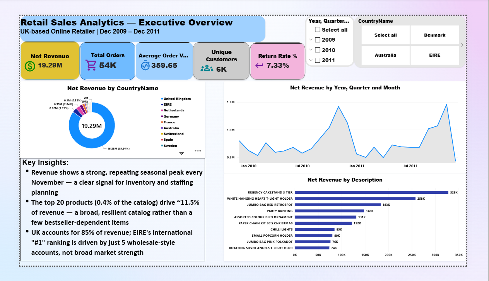

Core Tool
Power BI
Business Intelligence
Dashboard development, interactive reporting, data modeling and business performance analysis.
DATA ANALYST • BUSINESS INTELLIGENCE
I transform business data into clear insights, interactive dashboards, and practical reporting that support better decision-making.
PROFESSIONAL PROFILE
I am a Data Analyst & Business Intelligence professional focused on transforming business data into clear insights, interactive dashboards and practical reporting that support better decision-making.
My background combines business administration, financial operations and hospitality with hands-on data analysis. I work with Power BI, Excel and SQL to explore data, identify patterns and monitor business performance.
I focus on the business question behind the data — building analysis decision-makers can actually use: structured reporting, effective dashboards and clear communication of what the numbers mean.
TECHNICAL CAPABILITIES
I use analytical tools and data visualization techniques to transform raw business information into useful insights and decision-support reports.
Business Intelligence
Dashboard development, interactive reporting, data modeling and business performance analysis.
Data Analysis
Data preparation, analysis, reporting and structured business analysis.
Data Management & Analysis
Querying, filtering, joining and extracting structured data for analysis.
Insight Communication
Turning analytical results into clear visual reports and dashboards that communicate patterns and trends.
Data Preparation
Preparing, organizing and transforming data into a usable structure for analysis.
Decision Support
Developing practical reports that help stakeholders understand performance and make informed decisions.
SELECTED WORK
Practical projects demonstrating data analysis, business intelligence and technology-driven solutions.

Scholarship distribution, academic performance and campus-level comparison analysis.
An interactive Power BI dashboard built to analyze student scholarship allocation, academic performance, campus differences and scholarship-related risks.
Data Privacy Notice: The student data presented in this dashboard has been professionally fabricated and anonymized for portfolio demonstration purposes. It does not represent actual university records or identifiable student information. This approach was used to protect institutional and student data while demonstrating the analytical methodology, dashboard design, and business intelligence capabilities applied to the project.
View Case Study
Digital platform connecting agricultural products and users through a web-based solution.
A web application combining backend development, database management and REST API architecture to translate a business idea into a functional digital marketplace.
Explore Project
Revenue, bookings, occupancy and room performance analysis across 2023–2025.
An executive Power BI dashboard analyzing hotel revenue streams, booking channels, room utilization and key hospitality KPIs including ADR and RevPAR.
View Case Study
End-to-end retail sales analysis using SQL Server, Python, Excel and Power BI, covering revenue performance, customer segmentation, product returns and market trends.
An end-to-end retail analytics project taking a large raw transaction dataset through data processing, SQL analysis, Excel validation and Power BI dashboard development. A data validation issue was uncovered where a fully cancelled wholesale order had overstated revenue by approximately £1.5M — corrected and independently re-verified to the penny at £19,287,250.55 across SQL Server, Excel and Power BI.
View Case StudyEDUCATION & PROFESSIONAL DEVELOPMENT
Building a practical foundation in business, data analytics and business intelligence through academic study and real-world projects.
East African University Rwanda
Developing knowledge across business, hospitality operations, statistics, accounting, revenue management and related areas of business analysis.
Mathematics, Chemistry & Biology
Completed secondary education with a strong foundation in mathematics and science. Achieved a Grade B in Mathematics.
University Data Projects
Applying data analysis and business intelligence skills to practical university-related data projects, including data preparation, analysis, reporting and dashboard development.
Park Inn by Radisson Kigali
Practical exposure to professional hotel operations, teamwork, service procedures and hospitality standards.
Practical Projects
Developing practical capability through Power BI dashboards, data modeling, data cleaning, Excel analysis, DAX measures and business-focused reporting.
CERTIFICATIONS
Professional credentials validating skills in AI, data analytics and business intelligence.
ALX Africa
Completed the AI Career Essentials program covering artificial intelligence fundamentals, prompt engineering, machine learning concepts and AI-powered productivity tools.
GET IN TOUCH
Have a project, business question, or opportunity in data analytics and business intelligence? Let's connect.
I'm always interested in data-driven projects, business intelligence collaboration and new professional opportunities. Whether you have a specific question or want to explore working together — reach out.
Data Analyst · Business Intelligence · Reporting · Data Visualization · Internship & Entry-Level Opportunities